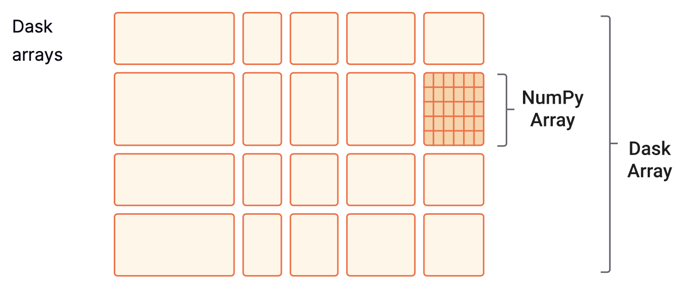

from dask.distributed import LocalCluster
cluster = LocalCluster(n_workers=70, memory_limit='auto', processes=True)6 Parallelization with Dask
6.1 Learning Objectives
Become familiar with the Dask processing workflow:
- What are the client, scheduler, workers, and cluster
- Understand delayed computations and “lazy” evaluation
- Obtain information about computations via the Dask dashboard
Learn to load data and specify partition/chunk sizes of
dask.arrays/dask.dataframesIntegrate
xarrayandrioxarraywith Dask for geospatial computationsShare best practices and resources for further reading
6.2 Introduction
Dask is a library for parallel computing in Python. It can scale up code to use your personal computer’s full capacity or distribute work in a cloud cluster. By mirroring APIs of other commonly used Python libraries, such as Pandas and NumPy, Dask provides a familiar interface that makes it easier to parallelize your code. In this lesson, we will get acquainted with Dask’s way of distributing and evaluating computations and some of its most commonly used objects.
6.3 Dask Cluster
We can deploy a Dask cluster on a single machine or an actual cluster with multiple machines. The cluster has three main components for processing computations in parallel. These are the client, the scheduler and the workers.
When we code, we communicate directly with the client, which is responsible for submitting tasks to be executed to the scheduler.
After receiving the tasks from the client, the scheduler determines how tasks will be distributed among the workers and coordinates them to process tasks in parallel.
Finally, the workers compute tasks and store and return computations results. Workers can be threads, processes, or separate machines in a cluster. Here you can read more about what are threads and processes and some best practices for selecting one or the other.
To interact with the client and generate tasks that can be processed in parallel we need to use Dask objects to read and process our data.
6.4 Connect to an existing cluster
The instructor is going to start a local cluster on the server that everyone can connect to. This scenario is a realistic simulation of what it would look like for you to connect to a shared Dask resource. You can create your own local cluster running on your laptop using code at the end of this lesson.
First, the instructor (and only the instructor!) will run:
To connect to it, we will use the address that the scheduler is listening on. The port is generated randomly, so first the instructor needs to get address for you to use in your code. In a ‘real world’ scenario, this address would be given to you by the administrator of the Dask cluster.
cluster.scheduler_addressNow, you can pass the address to the Client function, which sets up your session as a client of the Dask cluster,
from dask.distributed import LocalCluster, Client
# if you are copy pasting this from the book, make sure
# the address is the same that the instructor gave in the lesson!
address = 'tcp://127.0.0.1:40869'
client = Client(address)
client6.4.1 Dask Dashboard
We chose to use the Dask cluster in this lesson instead of the default Dask scheduler to take advantage of the cluster dashboard, which offers live monitoring of the performance and progress of our computations. You can learn more about different Dask clusters here.
As seen in the images above, when we set up a cluster we can see the cluster dashboard address by looking at either the client or the cluster. In this example the dashboard address is http://128.111.85.28:8787/status.
In order to get access to the dashboard, click the “ports” tab net to terminal. Add the port 8787 so that it is forwarded to your localhost.
When we go that address in a web browser we can see the dashboard’s main page. This page shows diagnostics about:
the cluster’s and individual worker’s memory usage,
number of tasks being processed by each worker,
individual tasks being processed across workers, and
progress towards completion of individual tasks.
There’s much to say about interpreting the Dask dashboard’s diagnostics. We recommend this documentation to understand the basics of the dashboard diagnostics and this video as a deeper dive into the dashboard’s functions.

6.5 dask.dataframes
When we analyze tabular data, we usually start our analysis by loading it into memory as a Pandas DataFrame. But what if this data does not fit in memory? Or maybe our analyzes crash because we run out of memory. These scenarios are typical entry points into parallel computing. In such cases, Dask’s scalable alternative to a Pandas DataFrame is the dask.dataframe. A dask.dataframe comprises many pd.DataFrames, each containing a subset of rows of the original dataset. We call each of these pandas pieces a partition of the dask.dataframe.

6.5.1 Reading a csv
To get familiar with dask.dataframes, we will use tabular data of soil moisture measurements at six forest stands in northeastern Siberia. The data has been collected since 2014 and is archived at the Arctic Data Center (Loranty & Alexander, doi:10.18739/A24B2X59C). Just as we did in the previous lesson, we will download the data using the requests package and the data’s URL obtained from the Arctic Data Center.
import os
import urllib
import dask.dataframe as ddurl = 'https://arcticdata.io/metacat/d1/mn/v2/object/urn%3Auuid%3A27e4043d-75eb-4c4f-9427-0d442526c154'
msg = urllib.request.urlretrieve(url, "dg_soil_moisture.csv")In the Arctic Data Center metadata we can see this file is 115 MB. To import this file as a dask.dataframe with more than one partition, we need to specify the size of each partition with the blocksize parameter. In this example, we will split the data frame into six partitions, meaning a block size of approximately 20 MB.
fp = os.path.join(os.getcwd(),'dg_soil_moisture.csv')
df = dd.read_csv(fp, blocksize = '20MB' , encoding='ISO-8859-1')
df
Encoding?
About the encoding parameter: If we try to import the file directly, we will receive an UnicodeDecodeError. We can run the following code to find the file’s encoding and add the appropriate encoding to dask.dataframe.read_csv.
import chardet
fp = os.path.join(os.getcwd(),'dg_soil_moisture.csv')
with open(fp, 'rb') as rawdata:
result = chardet.detect(rawdata.read(100000))
resultNotice that we cannot see any values in the data frame. This is because Dask has not really loaded the data. It will wait until we explicitly ask it to print or compute something to do so.
However, we can still do df.head(). It’s not costly for memory to access a few data frame rows.
df.head(3)6.5.2 Lazy Computations
The application programming interface (API) of a dask.dataframe is a subset of the pandas.DataFrame API. So if you are familiar with pandas, many of the core pandas.DataFrame methods directly translate to dask.dataframes. For example:
averages = df.groupby('year').mean(numeric_only=True)
averagesNotice that we cannot see any values in the resulting data frame. A major difference between pandas.DataFrames and dask.dataframes is that dask.dataframes are “lazy”. This means an object will queue transformations and calculations without executing them until we explicitly ask for the result of that chain of computations using the compute method. Once we run compute, the scheduler can allocate memory and workers to execute the computations in parallel. This kind of lazy evaluation (or delayed computation) is how most Dask workloads work. This varies from eager evaluation methods and functions, which start computing results right when they are executed.
Before calling compute on an object, open the Dask dashboard to see how the parallel computation is happening.
averages.compute()6.6 dask.arrays
Another common object we might want to parallelize is a NumPy array. The equivalent Dask object is the dask.array, which coordinates many NumPy arrays that may live on disk or other machines. Each of these NumPy arrays within the dask.array is called a chunk. Choosing how these chunks are arranged within the dask.array and their size can significantly affect the performance of our code. Here you can find more information about chunks.

In this short example we will create a 200x500 dask.array by specifying chunk sizes of 100x100.
import numpy as np
import dask.array as dadata = np.arange(100_000).reshape(200, 500)
a = da.from_array(data, chunks=(100, 100))Computations for dask.arrays also work lazily. We need to call compute to trigger computations and bring the result to memory.
a.mean()a.mean().compute()6.7 Dask and xarray
In the future, it might be more common having to read some big array-like dataset (like a high-resolution multiband raster) than creating one from scratch using NumPy. In this case, it can be useful to use the xarray module and its extender rioxarray together with Dask. In the previous lesson, Data Structures and Formats for Large Data, we explore how to use the xarray package to work with labelled arrays. rioxarray extends xarray with the rio accessor, which stands for “raster input and output”.
It is simple to wrap Dask around xarray objects. We only need to specify the number of chunks as an argument when we are reading in a dataset (see also [1]).
6.7.1 Open .tif file
As an example, let’s do a Normalized Difference Vegetation Index (NDVI) calculation using remote sensing imagery collected by aerial vehicles over northeastern Siberia (Loranty, Forbath, Talucci, Alexander, DeMarco, et al. 2020. doi:10.18739/A2ZC7RV6H.). The NDVI is an index commonly used to check if an area has live green vegetation or not. It can also show the difference between water, plants, bare soil, and human-made structures, among other things.
The NDVI is calculated using the near-infrared and red bands of the satellite image. The formula is
\[NDVI = \frac{NIR - Red}{NIR + Red}.\]
First, we download the data for the near-infrared (NIR) and red bands from the Arctic Data Center:
# download red band
url = 'https://arcticdata.io/metacat/d1/mn/v2/object/urn%3Auuid%3Aac25a399-b174-41c1-b6d3-09974b161e5a'
msg = urllib.request.urlretrieve(url, "RU_ANS_TR2_FL005M_red.tif")
# download nir band
url = 'https://arcticdata.io/metacat/d1/mn/v2/object/urn%3Auuid%3A1762205e-c505-450d-90ed-d4f3e4c302a7'
msg = urllib.request.urlretrieve(url, "RU_ANS_TR2_FL005M_nir.tif")Because these are .tif files and have geospatial metadata, we will use rioxarray to read them. You can find more information about rioxarray here.
To indicate we will open these .tif files with dask.arrays as the underlying object to the xarray.DataArray (instead of a numpy.array), we need to specify either a shape or the size in bytes for each chunk. Both files are 76 MB, so let’s have chunks of 15 MB to have roughly six chunks.
import rioxarray as rioxr# read in the file
fp_red = os.path.join(os.getcwd(),"RU_ANS_TR2_FL005M_red.tif")
red = rioxr.open_rasterio(fp_red, chunks = '15MB')We can see a lot of useful information here:
- There are eight chunks in the array. We were aiming for six, but this often happens with how Dask distributes the memory (76MB is not divisible by 6).
- There is geospatial information (transformation, CRS, resolution) and no-data values.
- There is an unnecessary dimension: a constant value for the band. So our next step is to squeeze the array to flatten it.
# getting rid of unnecessary dimension
red = red.squeeze()Next, we read in the NIR band and do the same pre-processing:
# open data
fp_nir = os.path.join(os.getcwd(),"RU_ANS_TR2_FL005M_nir.tif")
nir = rioxr.open_rasterio(fp_nir, chunks = '15MB')
#squeeze
nir = nir.squeeze()6.7.2 Calculating NDVI
Now we set up the NDVI calculation. This step is easy because we can handle xarrays and Dask arrays as NumPy arrays for arithmetic operations. Also, both bands have values of type float32, so we won’t have trouble with the division.
ndvi = (nir - red) / (nir + red)When we look at the NDVI we can see the result is another dask.array, nothing has been computed yet. Remember, Dask computations are lazy, so we need to call compute() to bring the results to memory.
ndvi_values = ndvi.compute()And finally, we can see what these look like. Notice that xarray uses the value of the dimensions as labels along the x and y axes. We use robust=True to ignore the no-data values when plotting.
ndvi_values.plot(robust=True)6.8 Setting up your own local cluster
6.8.1 Setting up a Local Cluster
We can create a local cluster as follows:
from dask.distributed import LocalCluster, Clientcluster = LocalCluster(n_workers=4, memory_limit=0.1, processes=True)
clusterAnd then we create a client to connect to our cluster, passing the Client function the cluster object.
client = Client(cluster)
clientFrom here, you can continue to run Dask commands as normal.
6.9 Best Practices
Dask is an exciting tool for parallel computing, but it may take a while to understand its nuances to make the most of it. There are many best practices and recommendations. These are some of the basic ones to take into consideration:
For data that fits into RAM, pandas, and NumPy can often be faster and easier to use than Dask workflows. The simplest solution can often be the best.
While Dask may have similar APIs to pandas and NumPy, there are differences, and not all the methods for the
pandas.DataFramesandnumpy.arraystranslate in the same way (or with the same efficiency) to Dask objects. When in doubt, always read the documentation.Choose appropriate chunk and partition sizes and layouts. This is crucial to best use how the scheduler distributes work. You can read here about best practices for chunking.
Avoid calling compute repeatedly. It is best to group similar computations together and then compute once.
Further reading:
A friendly article about common dask mistakes